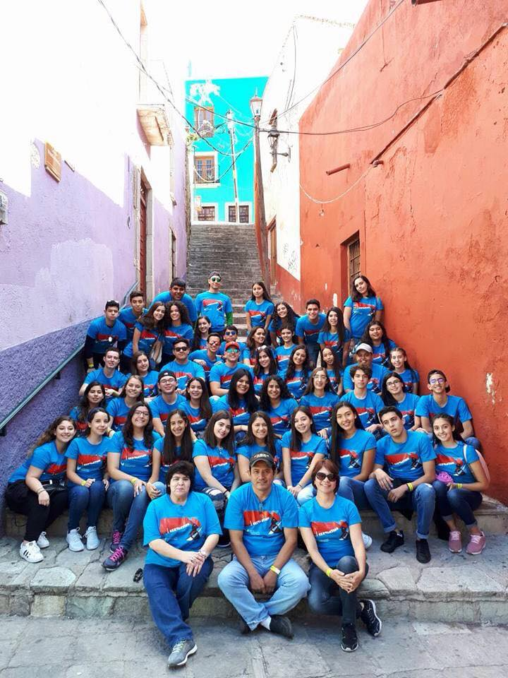

|
Este viaje se realizó el 15 de Octubre del 2017, partimos de Hermosillo al rededor de las 7:00 am, para poder estar en Guanajuato al siguiente dia,
Ibamos aproximadamente 50 alumnos en un camión, tuvimos algunas paradas para poder entrar al baño y ademas porque entrabamos a revisión de los soldados
pero la primera parada oficial fue en Mazatlan ya que llegamos a cenar al restaurante llamado "Panamá", ademas ahí festejamos el cumpleaños de dos
compañeros nuestros, Karina Velarde y Alan Hernandez, despues de cenar caminamos por el malecón para conocer un poco de esta bella ciudad para despues
abordar el camión y seguir nuestra ruta.Toda la noche fue dormir en camión para estar lo mas pronto posible en nuestro destino; llegamos a León Guanajuato
alrededor de las 12:00 pm, tuvimos la oportunidad de bajarnos para poder hacer compras.Terminamos las compras y seguimos el camino a Guanajuato;
llegamos directo al hotel para dejar nuestras maletas y salir a conocer y ademas ir al gran festival internaconal llamado "CERVANTINO" despues de ahí nos
fumos a cenar a unos ricos tacos llamados "El Paisa" para poder irnos a dormir ya que todos los dias en las mañanas saliamos a recorrer la ciudad y
conocer lugares historicos.
Un dia fuimos a Santa Rosa, un pequeño pueblo donde hacen unas mermeladas muy famosas las cuales son caseras, despues de ahí fuimos a Dolores Hidalgo,
un lugar famoso por la gran historia de nuestra Independencia, probamos las famosas nieves de su hermosa plaza para despues embarcar al camión y
seguir el camino a San Miguel de Allende, un lugar hermoson con una iglesia hermosa y sus calles perfectas, probamos sus exquisitos churros bañados.
Una de las noches tuvimos la famosa callejoneada donde cantamos, bailamos y unos declaramos nuestro amor a ciertas persona para que en su fin llegaramos
al callejón del beso para tomarnos fotos.
El 20 de octubre tomamos camino de regreso a Hermosillo pero todos muy contentos ya que habia sido una experiencia inolvidable de la cual aun seguimos
contando anecdotas.
|
 |